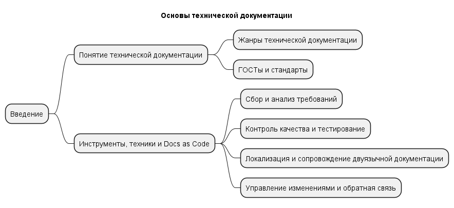
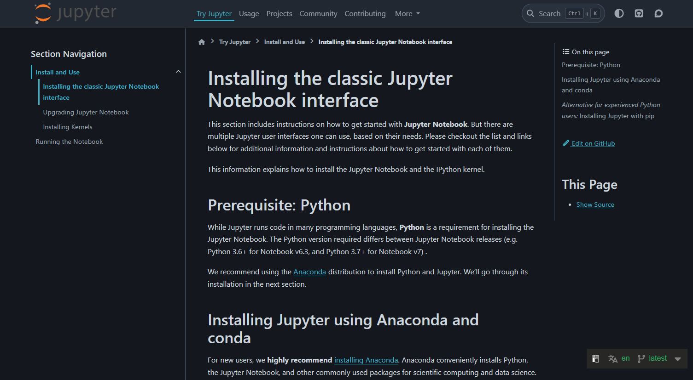

Бизнес-кейс:
Большая зеленая компания VS Маленькая синяя компания
Мелешко Александр Станиславович
15 лет опыта техписателем, переводчиком, редактором
Две опубликованных книги
Открыл (и через год закрыл) своё агентство по переводу игр
Руковожу небольшим отделом техписателей в большой компании
Любимая игра: Crusader Kings 3
Самый душный курс каждый семестр, когда преподавался
Особенности контента
Особенности постановки задач
Писать как можно меньше документации
Отбиваться от хотелок заказчика
Как можно меньше контактировать с конечным пользователем
Никогда больше не ходить на бесполезные созвоны в 9 утра
Четко пояснять, почему “нет, быстрее не получится”


???
Описание аспектов разработки, устройства и использования продукта
Канал коммуникации между участниками процесса разработки и использования продукта
Привлечение пользователя
Совместная работа
Реклама продукта
Отбиться и сослаться
Плюсы: ???
Минусы: ???
Кому? (Аудитория)
Зачем? (Задача)
Как? (Контекст)
Старые материалы остаются
Старые задачи остаются
Новые материалы (эта презентация) и новые задания добавляются ссылкой в конец урока на платформе
Старые задания выполнять можно, но оцениваться они не будут
Завести аккаунт, создать репозиторий и загрузить пустой файл. Записать каждый шаг. Открыть репозиторий для внешнего доступа.
Структура:
github.com/имя_пользователя/имя_репозитория/имя_файла.txtВ txt:
Имя Фамилия
Группа
почта@spb.ithub.ruDeliverables: Cсылка в виде
github.com/имя_пользователя/имя_репозитория/ в поле ответа
на платформе.